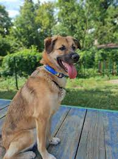
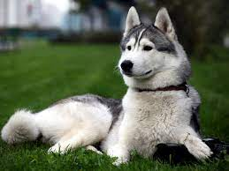

Собака
Свійська собака

Лайка
Лайка (1954 — 3 листопада 1957) — радянська собака-космонавт, перша тварина, виведена на навколоземну орбіту. Була запущена в космос 3 листопада 1957 року о пів на шосту ранку за московським часом на радянському кораблі «Супутник-2». На той момент Лайці було близько двох років, її вага була — близько 6 кілограмів.
Мальтип
Середня тривалість життя мальтіпу становить 12-14 років. ... Мальтіпу веселі і лагідні. ... Ці собаки можуть стати прекрасними компаньйонами. ... Мальтіпу люблять прогулянки. ... Мальтіпу охоче навчаються. ... Мальтіпу — це прийнятний варіант для людей з негативною реакцією на шерсть.